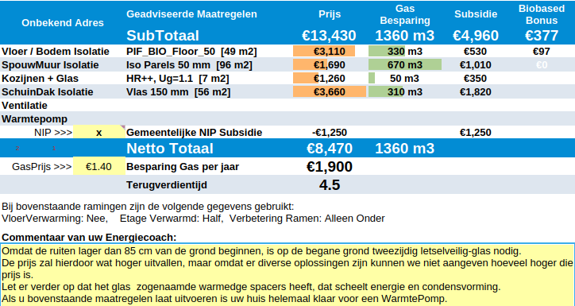
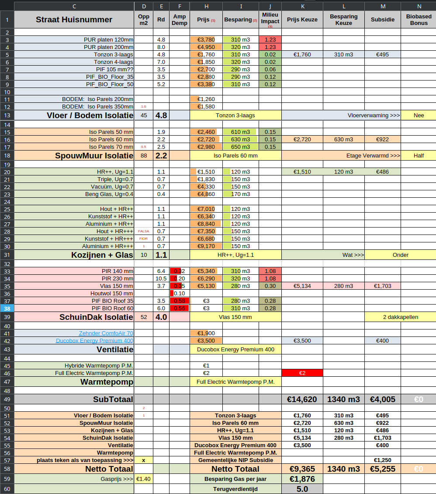

Hier kun je de praktische uitvoering van de verbetermaatregelen kiezen op grond van parameters die voor jou van belang zijn.
Qua financiën worden alle geldende subsidies meegenomen in het overzicht.
Naarmate we meer offertes krijgen zullen we onderstaande keuzen uitbreiden.
Na het maken van enkele keuzen, krijg je het volgende resultaat, waaruit een goed stappenplan kan worden afgeleid.

Het tabblad zelf ziet er behoorlijk complex uit, maar als je beseft dat je alleen de licht-gele velden mag invullen, valt het erg mee.
Wat we hier proberen te doen is afgekeken van Smart-Twin, met als eerste grote verschil dat we 10 pagina's reduceren tot 1 pagina, heel doelbewust om vooral een overzicht te houden en bewuste keuzen te kunnen maken.
Het tweede grote verschil is dat we proberen zoveel mogelijk relevante parameters van een maatregel objectief weer te geven, zodat je optimale keus kunt maken, geheel afhankelijk van hetgeen jezelf van belang vindt.
Op de volgend pagina gaan we als voorbeeld eerst de dakisolatie nader bespreken.
Vervolgens bespreken we het totaaloverzicht.
